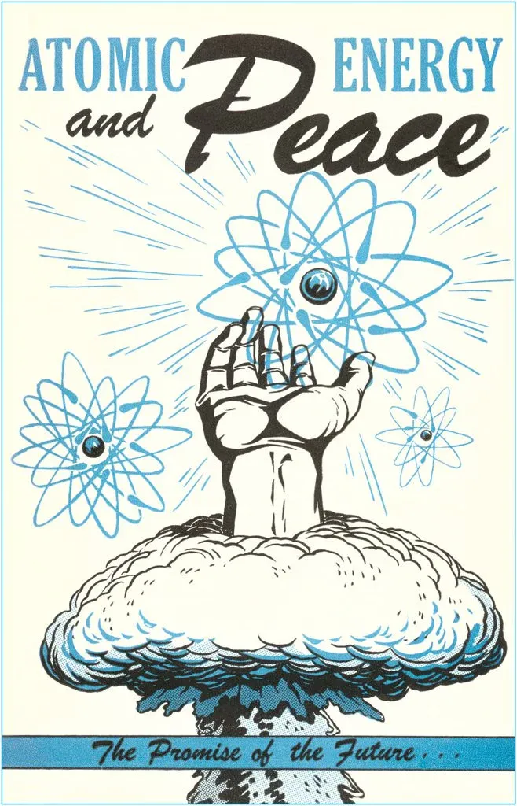

Nuclear Fission: A Primer
No probably not. But maybe a bit? It’s a partial answer. With caveats of course

Lunar invests in technical founders taking science risk to build world-changing companies. Get in touch lawrence@lunar.vc.
Some lovely feedback on the AI 2035: Scale, Deploy and Secure work. My fav:
“i dunno man, i think you are overthinking it”
Hello, nice to meet you, do you like know me, but at all?
Meanwhile, all the talk over on Bluesky is of nuclear power ftw. Google and Microsoft are off to the races, Amazon was blocked but almost certainly will get the green light under Trump. And Mark and Meta now have to fight the bees. So I guess nuclear will power the datacentres of the future?

As a research-led investor, I decided to do my job and do some *research*. Here’s what I found. LCOE bad. baseload good. My conclusion: no nuclear probably isn’t the answer. Well at least not the full answer. It’s a partial answer. I’m not here to tell you Amazon, Google, Microsoft and Meta are wrong. But I sort of am?
I’m skeptical on timeline and cost. While we’re talking about scaling to 10GW and then 100GW datacentres by 2030ish, NuScale have been plugging away for 15 years and despite regulatory approval, cancelled it’s first project because of a lack of interest. If it ever gets off the ground it won’t be before 2030. Yikes, right?
Cost is really the ball game. While NuScale's levelized cost of electricity (LCOE) ranges from $89-135/MWh, beating traditional nuclear power's $110-160/MWh, it remains far more expensive than combined cycle gas at $45-70/MWh and solar plus storage at $30-60/MWh. And the truth is nuclear prices keep going up whilst the cost of solar/wind/batteries keep going down. The arrows are all pointing in the wrong direction. I’m not saying a bet on nuclear is a bet against solar/wind+batteries, because we are likely to need all the power generation we can get, but it sure limits the market potential.
Nuclear and SMRs will still a significant role because data centers require "six nines" reliability (99.9999% uptime), and nuclear offers a basically unmatched combination of reliability, location flexibility, and energy security that makes it an ideal baseload power source. Unlike gas plants, nuclear facilities can store years worth of fuel on-site, eliminating supply chain vulnerabilities. While solar and wind will likely provide cheaper supplementary power, nuclear could serve as the backbone of a hybrid power solution that delivers AI from the plug reliably.
This is just SMRs in the context of serving datacentres. Nuclear and SMRs have a larger role in decarbonising the economy, especially replacing gas plants. This decarbonization mission involves providing reliable power for industrial processes, district heating, and general grid stability where the economics and timeline constraints might be less demanding than AI infrastructure needs. In these applications, SMRs can compete more effectively with alternatives because they're solving different problems - grid stability, energy security, and industrial decarbonization - rather than racing to meet the explosive growth of AI power demand. The timeline mismatch that makes SMRs challenging for data centers becomes less problematic when planning long-term grid transitions, and the higher costs might be more acceptable when weighed against the full system value of reliable, carbon-free baseload power.
If you just wanted a primer, you can go now. Take care.
Here’s a summary of SMRs before you:
Pressurized Water Reactors: Uses regular water for cooling - the most proven and widely used design.
Sodium-Cooled Fast Reactors: Uses liquid sodium for cooling, which allows for better fuel efficiency.
Molten Salt Reactors: Uses hot liquid salt that acts as both the fuel and coolant.
High-Temperature Gas-Cooled Reactors: Uses helium gas to cool special fuel pellets at very high temperatures
Fast Reactors (Other Coolants): Experimental reactors using different coolants like lead.
Heat Pipe Reactors: The simplest design, using metal tubes filled with liquid metal to move heat.
Fluoride Salt-Cooled Reactors: Uses regular nuclear fuel but cools it with liquid salt instead of water.
But for the nuclear-curious amongst us, strap on the SCUBA tank (aka do a deep dive). (Note: remove this before publishing, it’s bad)
Technical Summary
Let’s start from the beginning to get on the same page. Small Modular Reactors (SMRs) are small. More specifically they are smaller than other nuclear reactors. Traditional nuclear outputs between 1,000-1,600 megawatts electric (MWe) per reactor. SMRs usually go at 50-300 MWe per module. Also they are modular. To massively overgeneralise (why else are you here?), they are designed to be built in factories not on-site. Imagine a production line where standardized nuclear reactor components are assembled in a controlled environment, with consistent quality checks and workers who become increasingly efficient at building the same design over and over. These completed modules are then shipped to the power plant site by truck, rail, or ship - essentially arriving as nuclear "LEGO" pieces ready to be assembled. The Ford Assembly line for nuclear basically.
SMRs are not a single thing. The architecture varies across designs. Light Water Reactor (LWR) based SMRs, currently the most mature, utilize proven PWR technology scaled down and modified for modular construction. These systems typically operate at pressures of 15-16 megapascals (MPa) and temperatures around 315°C. (Espresso machines operate at around 0.9 MPa, so this is like 17 espresso machines combined). Non-LWR designs include molten salt reactors operating at atmospheric pressure with coolant temperatures exceeding 600°C, enabling higher thermal efficiencies. High-temperature gas-cooled reactors, using helium as coolant, can reach temperatures of 750°C, making them suitable for industrial process heat applications. And sodium-fast reactors operate at low pressure with coolant temperatures around 500°C, offering better fuel efficiency through closed fuel cycles.
Now, numbers. The nuclear power market makes up ~10% of global electricity, about $350-400 billion annually and 32% of zero-carbon electricity generation across ~440 operating reactors worldwide. So SMRs have a large market to sell into, but the bull case for SMRs is not to replace existing nuclear, it’s to massively grow that 10% of global electricity. The IAEA projects that nuclear power capacity could double by 2050 in scenarios focused on meeting climate goals, with the majority of that coming from SMRs. But datacentres are a totally new customer outside of those forecasts.
Reactor Types
Here’s a good comparison table. Enjoy.

Technical Maturity
Now each reactor significantly by design type and manufacturer.
Pressurized Water Reactors (PWR): Most mature SMR technology with extensive operational history. Multiple vendors have designs in late-stage licensing, including NuScale's approved design. Manufacturing supply chains are well-established for major components. Testing facilities and operational procedures are standardized. Key technical challenges focus on cost reduction rather than fundamental technology development. Key Players:
Rolls-Royce SMR (UK): 470 MWe pressurized water reactor design.
GE Hitachi Nuclear Energy (USA/Japan): 300 MWe BWRX-300 water-cooled reactor.
NuScale Power (USA): 250 MWe per module with NuScale Power Module
Sodium-Cooled Fast Reactors: Significant operating experience from experimental and demonstration reactors (e.g., EBR-II, BN-series). Current focus on qualifying materials for commercial lifetimes and scaling up manufacturing. Several designs in regulatory review. Main technical hurdles include sodium leak detection systems and demonstrating passive safety features at commercial scale. Supply chain for specialized components still developing. Key Players:
TerraPower (USA): 345 MWe Natrium sodium-cooled fast reactor.
ARC Clean Energy (Canada): 100 MWe ARC-100 sodium-cooled fast reactor.
Molten Salt Reactors: Limited full-scale operational experience, though significant test reactor data exists. Current work centers on materials qualification, particularly for high-temperature salt containment. Chemical processing systems for fuel salt need demonstration at scale. Regulatory framework still evolving for liquid fuel designs. Multiple startups advancing different variants but still pre-commercial. Key Players:
Terrestrial Energy (Canada): 195 MWe Integral Molten Salt Reactor (IMSR).
Moltex Energy (UK/Canada): 300 MWe Stable Salt Reactor (SSR).
Seaborg Technologies (Denmark): 100 MWe Compact Molten Salt Reactor (CMSR).
High-Temperature Gas-Cooled Reactors: Moderate operational experience from demonstration plants (AVR, THTR, Fort St. Vrain). TRISO fuel manufacturing at industrial scale demonstrated. Current technical focus on helium circulator reliability and power conversion systems. Several designs progressing through regulatory review. Supply chain partially established through existing gas turbine industry. Key Players:
X-energy (USA): 80 MWe Xe-100 high-temperature gas-cooled reactor.
General Atomics (USA): 265 MWe Energy Multiplier Module (EM2) helium-cooled fast reactor.
USNC (USA/Canada): 5 MWe Micro Modular Reactor (MMR) high-temperature gas-cooled reactor.
Fast Reactors (Other Coolants): Various coolants (lead, gas) at different maturity levels. Lead-cooled systems have limited operational experience from submarine reactors. Materials compatibility and corrosion control remain key technical challenges. Most designs still at conceptual or early demonstration phase. Significant R&D needed for commercial deployment. Key Players:
Oklo (USA): Currently 1.5 MWe Aurora fast reactor, with plans for larger versions.
LeadCold (Sweden): 3-10 MWe SEALER (Swedish Advanced Lead Reactor) lead-cooled fast reactor.
Heat Pipe Reactors Newest technology with limited operational history. HALEU fuel supply chain still developing. First demonstration units under construction (e.g., LANL's Kilopower). Simple design but needs operational validation. Manufacturing processes being established. Technical maturity focused on demonstrating long-term heat pipe reliability and nuclear-thermal coupling. Key Player:
Westinghouse Electric Company (USA): 5-25 MWe eVinci micro reactor (heat pipe reactor).
Fluoride Salt-Cooled Reactors: Limited large-scale operational experience, but benefits from extensive materials testing in the Molten Salt Reactor Experiment (MSRE) at Oak Ridge. Current development focuses on salt chemistry control and heat exchanger optimization, particularly for FLiBe coolant systems. Combines proven TRISO fuel technology with high-temperature salt cooling benefits. Regulatory pathway clearer than liquid-fueled MSRs due to use of qualified solid fuel form. Demonstration projects currently under construction will provide crucial operational data for commercial deployment. Key Players:
Kairos Power (USA): 140 MWe KP-FHR, with Hermes 35 MWth test reactor under construction in Tennessee
Copenhagen Atomics (Denmark): 100 MWe HTFSR design using fluoride salt cooling
Market Driver
Decarbonisation and energy security are secondary drivers of SMR adoption. The major catalyst, and why we are all here today, is datacentre power needs. Google's partnership with Kairos Power demonstrates the scale of this transition: their planned 500MWe deployment utilizes Kairos's fluoride salt-cooled high-temperature reactor (KP-FHR) technology, operating at 600°C with TRISO particle fuel. The project's $2 billion investment includes dedicated manufacturing facilities, suggesting a broader deployment strategy. Amazon's strategic investment in X-energy focuses on the Xe-100 high-temperature gas-cooled reactor design, with planned deployment of four 80MWe modules specifically configured for data center applications. Their acquisition of the Susquehanna-adjacent facility for $650 million demonstrates the premium value placed on nuclear-powered sites. Microsoft's 20-year agreement with Constellation Energy for Three Mile Island represents a different approach, focusing on existing nuclear infrastructure rehabilitation. The contract includes provisions for power purchase agreements at $65/MWh, establishing a benchmark for nuclear-data center partnerships. Meta's aborted nuclear data center project (the bees), while temporarily halted due to environmental concerns, had advanced to detailed design phase with innovative load-following capabilities specifically engineered for AI workloads. These developments collectively signal a fundamental shift in data center power strategy, with hyperscalers essentially becoming anchor customers for next-generation nuclear deployment.
SMR Benefits
Load Factor and Reliability Characteristics
SMRs demonstrate superior operational consistency with capacity factors exceeding 90%, significantly outperforming alternatives. Traditional combined cycle gas turbines achieve 55-65% capacity factors due to economic dispatch constraints, while wind typically ranges from 35-45% and solar PV 15-30% depending on location. Even paired with storage, renewable systems struggle to match SMR availability - current utility-scale solar plus battery installations achieve effective capacity factors of 45-55% due to storage depth limitations. This translates to practical implications: a 300MWe SMR installation can deliver approximately 2,365 GWh annually, compared to 1,577 GWh from an equivalent nameplate gas plant or 1,183 GWh from solar plus 8-hour storage.
Land Use and Siting Flexibility
SMRs also don’t use much land. A typical 300MWe SMR facility requires approximately 15-20 acres for the reactor and auxiliary systems, compared to 1,500-2,000 acres for an equivalent solar plus storage installation. Furthermore, SMRs can be sited independent of geographic constraints that limit other technologies - they don't require the high insolation levels needed for solar, the consistent wind patterns for turbines, or the geographical features necessary for pumped hydro storage. Many SMR designs also offer black start capabilities, providing grid restoration services that typically require dedicated gas turbine installations.
Operational Flexibility and Grid Services
Modern SMR designs incorporate enhanced load-following capabilities that distinguish them from traditional nuclear plants. NuScale's VOYGR system demonstrates ramp rates of 40% per hour, comparable to combined cycle gas turbines at 50% per hour. This flexibility enables SMRs to provide ancillary grid services, including frequency regulation and voltage support, traditionally supplied by fossil fuel plants. TerraPower's Natrium design specifically incorporates molten salt thermal storage, enabling power output modulation between 345-500MWe while maintaining constant reactor operation - a feature particularly valuable for renewable-heavy grids.
Long-term Cost Stability
While initial capital costs remain high, SMR costs are at least predictable. Fuel costs represent approximately 10% of total levelized costs, compared to 60-70% for gas plants. This reduced exposure to commodity price volatility provides significant value to utilities and industrial consumers - during the 2022 European gas crisis, for example, equivalent power from gas generation saw cost swings of €200-300/MWh while nuclear costs remained stable. The 60-year operational lifespan of SMRs, with potential extensions to 80 years, also contrasts favourably with 25-30 year lifespans for renewable installations. The market loves stability right?
Process Heat Applications
Unlike most alternatives, advanced SMR designs can provide high-grade process heat for industrial applications. The X-energy Xe-100's 750°C outlet temperature enables direct industrial applications including hydrogen production (requiring >700°C for efficient thermochemical processes), petrochemical processing, and industrial heating. Traditional combined cycle plants deliver process steam at maximum 565°C, while renewable systems cannot directly supply high-temperature heat. This capability positions SMRs uniquely for industrial decarbonization - the US Department of Energy estimates 12% of industrial emissions come from high-temperature heat requirements that only nuclear or fossil fuels can currently provide.
Waste Heat Utilization
SMR designs enable efficient cogeneration applications through waste heat utilization. A typical 300MWe SMR operating at 33% thermal efficiency has approximately 600MWth of waste heat available at temperatures suitable for district heating, desalination, or industrial processes. When configured for cogeneration, total system efficiency can reach 80-85%, significantly exceeding standalone electrical generation alternatives. This has particular relevance for northern regions - Finland's VTT Technical Research Centre demonstrates that SMR cogeneration could reduce district heating costs by 15-25% compared to dedicated heat plants.
Supply Chain Security
SMRs offer superior energy security features compared to alternatives. Nuclear fuel's high energy density means a single fuel load can provide 18-24 months of operation - the entire lifetime fuel requirement for a 300MWe SMR can be stored on-site in a space smaller than a shipping container. This contrasts sharply with gas plants requiring continuous pipeline access or renewable installations dependent on global supply chains for replacement components. The potential for domestic manufacturing of key components further enhances this advantage, particularly in regions prioritizing energy independence. Stability again. Expensive but stable? It’s a pitch.
SMR Weaknesses
But yeah, trade-offs.
Capital Cost Intensity and Financial Risk
So SMR projects are expensive. Current first-of-a-kind costs reaching $9,300/kWe for NuScale's system dramatically exceed alternatives - nearly eight times the cost of combined cycle gas turbines ($1,200/kWe) and five times that of utility-scale solar plus storage ($1,800/kWe). This capital intensity creates substantial financing challenges. The extended construction period, even if shorter than traditional nuclear, means significant capital costs must be financed for 5-7 years before any revenue generation. The recent experience with the Utah Associated Municipal Power Systems (UAMPS) project demonstrates these challenges - multiple utilities withdrew citing financing concerns despite Department of Energy support. Even with promised learning curve reductions to $3,500-4,000/kWe for nth-of-a-kind units, SMRs remain significantly more capital intensive than alternatives. Really small SMRs like Westinghouse's eVinci microreactor (5 MWe) and Last Energy's 20 MWe design have lower absolute capital costs due to their size reducing the construction length and reducing the financing risk, too. Even at this smaller scale, recent cost estimates for these micro-SMRs suggest capital costs ranging from $10,000-15,000/kWe. The hope is that their smaller size will enable true factory manufacturing and faster learning curves, but this remains unproven. (Someone will @ me to correct me on this I hope)
Regulatory Complexity and Timeline Uncertainty
And regulation obviously. This is the big cost driver. NuScale's experience - requiring 15 years and $500 million for design certification is a warning. This regulatory complexity extends beyond initial approval; each deployment site requires separate environmental and safety reviews. The lack of international regulatory harmonization means designs must undergo separate certification processes in each country, potentially requiring modifications that negate standardization benefits. For comparison, utility-scale solar projects typically complete permitting in 12-18 months, while combined cycle gas plants require 24-36 months for full regulatory approval. Again the micro-reactor providers are hoping the smaller the reactor the cheapest and faster certification can be, but this is still unproven. Regulators move pretty slowly. And the Nuclear Regulatory Commission (NRC)? Well they are busy worrying about The Upside Down….
Unproven Manufacturing and Construction Timeline
Can we even make these things? The theoretical benefits of modular construction remain largely undemonstrated at commercial scale. While vendors project 36-48 month construction periods, no SMR has yet been constructed to validate these estimates. The manufacturing supply chain faces significant constraints - only three facilities globally can produce the required nuclear-grade pressure vessels, with lead times extending to 36 months. Quality control requirements for nuclear components introduce additional complexity; recent experience with the Vogtle AP1000 project showed how minor manufacturing defects can cause multi-year delays. Solar and wind projects, by contrast, utilize mature manufacturing processes with established quality control procedures and reliable timelines.
Waste Management Requirements
Despite improved fuel efficiency, SMRs still generate nuclear waste requiring sophisticated long-term management. A typical 300MWe SMR produces approximately 15-20 metric tons of spent fuel annually. While this volume is smaller than traditional nuclear plants, it still requires secure storage for thousands of years. The associated costs - including spent fuel storage, eventual decommissioning, and long-term waste management - must be factored into project economics. These requirements introduce unique regulatory obligations and potential future liabilities that competing technologies don't face. Solar panel and wind turbine disposal, while challenging, involves considerably simpler regulatory and technical requirements.
Public Acceptance Challenges
And finally, Three-Mile Island and Fukushima. Despite enhanced safety features, SMRs face significant public acceptance hurdles inherited from traditional nuclear power. Recent surveys indicate 40-50% public opposition to nuclear facility siting across most developed nations. This opposition can manifest in extended legal challenges and permitting delays. The need for emergency planning zones, even if reduced from traditional nuclear plants, creates additional siting constraints. While other generation technologies face public opposition, particularly around land use and visual impact, the unique safety concerns associated with nuclear power introduce additional project risk and community engagement requirements. Again, people have legit concerns about The Upside Down.
Impact: Will SMRs power datacentres?
Maybe, but not in short term unless something material changes in the regulatory regime and manufacturability which directly results in materially lower costs and LCOE.
2024-2030: The next five years will see limited nuclear deployment for AI infrastructure, primarily through agreements with existing nuclear plants like Microsoft's Three Mile Island deal at $65/MWh. New SMR deployments will likely continue to face delays even if the certification process is reformed through the deregulating zeal of a Trump administration. Hyperscalers will push hard for nuclear reform and SMR development, but they will continue to rely on grid power, gas generation, and renewable-plus-storage installations, with nuclear providing perhaps 5-10% of AI infrastructure power through existing plant agreements.
2030-2035: As first-generation SMRs enter service, maybe 2029 or so if we are super lucky. They'll likely form part of hybrid power solutions rather than standalone data center power sources. These installations will combine nuclear baseload power with renewable generation and storage systems. Advanced designs like TerraPower's Natrium (45% efficiency) and X-energy's high-temperature reactors (750°C output) could begin commercial deployment, but their contribution will still be limited by manufacturing and regulatory constraints. Nuclear might reach 15-20% of AI infrastructure power by 2035, primarily serving as the baseload component of diversified power strategies.
2035+: Nuclear's role could expand to 30%+ of AI infrastructure power, but likely no higher given competition from increasingly mature renewable-plus-storage solutions. The value proposition will center on nuclear's ability to provide reliable baseload power with "six nines" uptime in locations where renewable deployment is challenging. Most installations will use hybrid architectures, with nuclear providing steady baseload power supplemented by renewables and storage. Advanced reactor designs will improve thermal efficiency and enable better integration with data center cooling systems, but cost competitiveness with renewable-plus-storage solutions will remain challenging. The key driver for nuclear adoption won't be cost leadership but rather its unique ability to provide location-flexible, ultra-reliable baseload power with high energy security.
30% of all AI datacentres in a decade is nothing to sniff at. It’s still one hell of a market to win. Interesting curveball might be nuclear fusion for which the hyperscalers have also shown a bit of leg. More on this to come in a future edition.
Value Chain
A value chain! Maybe one day I might still work at McKinsey. And look you are getting it for free!

Design & Engineering: Traditional nuclear vendors (GE Hitachi, Westinghouse) and new entrants (NuScale, TerraPower, X-energy) lead reactor design. Digital service providers (Siemens, ANSYS) supply modeling and simulation tools. Key activities include core design, thermal hydraulics, safety systems, and digital twin development. This segment interfaces heavily with regulatory bodies for design certification.
Testing & Validation Infrastructure: Currently dominated by national laboratories (Idaho National Lab, Oak Ridge) with emerging private sector facilities. Focuses on thermal-hydraulic testing, materials qualification, and safety validation. Critical for regulatory approval but faces severe capacity constraints.
Component Manufacturing: Highly specialized segment requiring ASME N-stamp certification. Critical component manufacturers include Japan Steel Works, Doosan Heavy Industries, and China First Heavy Industries (pressure vessels). Specialized providers for control rod mechanisms (three globally) and high-temperature materials (two suppliers for Hastelloy-N).
Fuel Supply Chain
Mining and processing (Cameco, Kazatomprom)
Enrichment (Centrus Energy, URENCO) - particularly critical for HALEU
Fuel fabrication (Westinghouse, Framatome)
TRISO fuel production for advanced reactors (limited suppliers)
Construction & Installation: Specialized firms (Bechtel, Fluor, SNC-Lavalin) with nuclear qualifications handle site preparation and assembly. New requirements emerging for modular construction techniques and specialized transportation. Factory manufacturing creates novel supply chain and logistics requirements.
Digital Systems & Control: Control system manufacturers (Rolls-Royce Controls, Westinghouse). Digital twin operations platforms. AI/ML-driven predictive maintenance. Safety monitoring and regulatory compliance systems
Operations & Maintenance: Requires specialized nuclear operators (40-60 personnel per shift), maintenance providers, and security services.
Waste Management: Specialized firms handling: spent fuel storage and transportation, Intermediate storage facilities, long-term disposal planning, waste treatment and processing
Decommissioning Services: Site remediation specialists, radioactive material handling, long-term monitoring, site restoration
Note how much of the value chain is highly concentrated and geopolitically risky. So even if we want SMRs for energy independence, the supply chain is still reliant on an interconnected web of global supplies. I mean have a look at Kazatomprom for Uranium for example.
Opportunities
This wouldn’t be a “research-led investor” if I didn’t try and make some money from all this research.
1. Testing infrastructure
Testing infrastructure is one of the most overlooked investment opportunities in the SMR sector. It is probable the single biggest bottleneck. The current regulatory approval process remains bottlenecked by the limited availability of experimental validation facilities. Most advanced reactor testing currently depends on a small number of national laboratory facilities, primarily the Idaho National Laboratory's Advanced Test Reactor and Transient Reactor Test Facility, which face severe oversubscription resulting in multi-year waiting periods for critical experiments. Private testing infrastructure could transform this landscape by enabling parallel validation of multiple design aspects. The market opportunity spans thermal-hydraulic test loops for safety system validation, materials testing facilities for high-temperature applications, and instrumentation validation laboratories. TerraPower's recent challenges with HALEU fuel qualification illustrate the impact of testing bottlenecks - dedicated testing infrastructure could have significantly accelerated their development timeline.
2. Manufacturing Supply Chain Modernization
The most tractable bottleneck is in the nuclear-grade manufacturing supply chain. With only three facilities globally capable of producing pressure vessels and lead times extending to 36 months, this represents a clear chokepoint. Investment opportunities exist in advanced manufacturing technologies, particularly those focused on ASME Section III N-stamp certification compliance. Electron beam welding technology and advanced inspection systems for nuclear components offer particularly attractive entry points. The Idaho National Laboratory's demonstration of 50% cost reduction through advanced manufacturing techniques suggests significant market opportunity in this space. So plenty can be done. But obviously the barriers to entry are high. YCombinator this is not.
3. Specialized Component Development
The supply chain for high-temperature materials and specialized components, particularly for advanced designs like TerraPower's Natrium and X-energy's Xe-100 is another bottleneck. With only two qualified suppliers globally for some critical components, companies developing specialized alloys like Hastelloy-N for molten salt systems or composite materials for high-temperature gas operations could capture significant market share. The need for nuclear-grade control rod drive mechanisms, currently limited to three qualified manufacturers worldwide, presents another specific opportunity. Again, this isn’t coming from a Stanford drop-out. No offense obviously, I never went to Stanford. But the truth is most of the people that can build this are on a list. A very important list.
4. Digital Systems and Operational Innovation
But maybe here is a software one for us VCs looking for a scalable business model with low risk. Operating complexity and staffing requirements present a solvable bottlenec. Current NRC requirements for 40-60 personnel per shift could be reduced through advanced control systems and digital twins. Oak Ridge National Laboratory's demonstration of microsecond response times for anomaly detection suggests a path forward. This reeks of “AI for nuclear plant control”. There is an LLM for that probably. Or more likely plain old “predictive maintenance”. Obviously giving an AI access to nuclear power plants smells of existential risk. Eliezer would not be happy. And for good reason. Maybe good investment, bad idea?
5. Thermal Storage and Grid Integration
Another good one is solving grid integration challenges with thermal storage systems and load-following capabilities. Advanced nuclear reactors need systems for integrating their output with modern electrical grids. The core challenge is transforming steady nuclear heat production into flexible electrical output that can complement renewables and meet varying grid demands. This spans multiple technology areas: thermal storage systems (using various materials and designs beyond just molten salt), advanced power conversion equipment, grid interconnection technology, and the complex control systems that tie it all together. Companies developing these components and integration solutions are well-positioned, as every advanced reactor project will need this capability. The opportunity extends beyond just hardware - there's significant value in developing the software and control systems that optimize plant operations, balance multiple energy streams, and interface with grid operators. These technologies can directly improve plant economics by enabling nuclear plants to provide premium-priced dispatchable power and grid services, making them essential to the commercial success of advanced nuclear projects. With multiple reactor designs moving toward deployment and growing utility interest in flexible nuclear generation, the market for these integration technologies appears poised for growth.
And there you have it, if you got to the end and want MORE! get in touch.
Bye